Thank you to Alan Quinn and the Needlebar Group for making the survey possible, as well as for their ongoing sewing machine research that so greatly benefits all of us with an interest in these old machines.
One of the most fascinating aspects of Standard Rotary sewing machines made by the Standard Sewing Machine Co. is that some of them will take an attachment called a chainstitch spider which installs in place of the bobbin case and (used along with a special chainstitch needle plate) converts the machine from straight stitch to single thread chainstitch. The spider that came with my Standard Rotary serial number 770155 worked well in that machine and one with a later serial number, but it would not fit it into any of my machines with a lower serial number.
In doing this survey, I was hoping to find out whether there was a version of the chainstitch spider that would fit the earlier Standard Rotary machines. The earliest serial number for a machine in the survey that was confirmed to have a spider is 727368. Whether there is a version of the spider that will fit Standard Rotary machines with a serial number lower than 700000 remains to be discovered.
(Update August 2009. Machine #545,868 accepts and is able to use a solid center pin chainstitch spider. The use of the spider may depend on the type of hook mechanism and bobbin case the machine has. Further details in the NeedleBar Picture Library )
The earliest machine in the survey has
serial number 62565. Machines with serial numbers lower than 174193 have the
serial number on the flip-up plate (Photo 1). Machines with serial numbers above
182514 have the serial number on the stitch length plate (Photo 2). This serial
number division also signifies a general change from the springless felt and
grooved disk tension assembly (Photo 3) to the tension assembly with a spring
and and a takeup spring with one free end (Photo 4). Two machines earlier than
174193 are reported as having the J tension assembly; perhaps the tension assembly
was replaced with a later version sometime during their working lives.
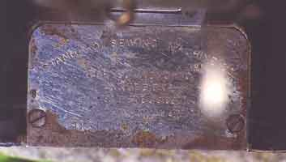
Photo 1. Serial number on edge of flip-up plate. |
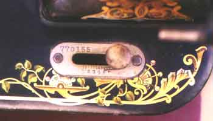
Photo 2.
Serial number on stitch length plate. |
Photo 3. Tension assembly made up of grooved disk and felt pads, no spring ("I" in the table of survey results). |
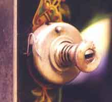
Photo 4. Tension assembly with spring and takeup spring having one free end ("J" in the table of survey results). |
Another major division in the serial numbers
occurs between 1065155 which is the latest reported "slim" machine (5) and 1247790
which is the earliest reported "stout" machine (6). This change in shape corresponds
with another change in the tension assembly to one including a takeup spring
with no free end (7).
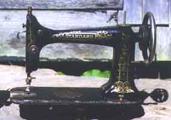 Photo 5. "Slim" |
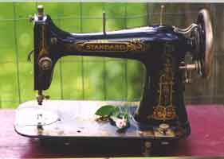 Photo 6. "Stout" |
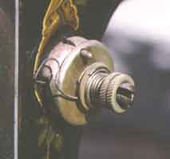
Photo 7. Tension assembly with spring and the takeup spring has no free end--found only on "stout" shape ("K" in the table of survey results). |
In addition, the shape change signifies
a change in the shuttle race from a hollow pin to a solid pin. Therefore, stout
machines require a spider with a hollow pin, and slim machines of approximate
serial number 700,000 and above require a spider with a solid pin.
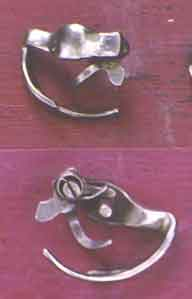 Photo 8. Front and back of spider with solid pin, which fits "slim" machines having serial numbers above about 700,000. |
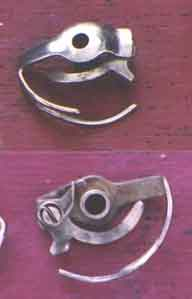 |
The 4 feed dog variants (Photos 10, 11, 12, 12) do not seem to be perfectly correlated with any particular serial number sets except that versions 1 and 2 are found only on "slim" machines and version 4 is found only on "stout" machines. Note the slight difference in configuration between versions 3 and 4: on version 3, the leg of the L-shaped feed extends only to the front edge of the needle hole; on version 4, the leg extends well beyond the front edge of the needle hole.
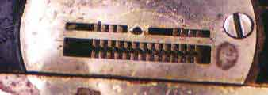
Photo 10. Feed dogs version 1. |
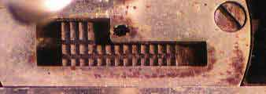 Photo 11. Feed dogs version 2. |
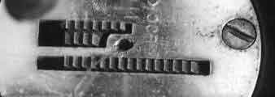 Photo 12. Feed dogs version 3. |
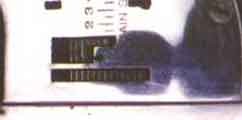
Photo 13. Feed dogs version 4. |
The two known variants of the common leafy vine decal, "multi" (Photo 14) and "brown/gold" (Photo 15), are both found on quite early "slim" machines as well as much later "stout" machines.
One person reported a confirmed Standard
Rotary machine with completely different decals, a gold art deco pattern with
the famous winged bobbin decal on the bed. A few others reported decals that
were not the basic leafy vine decal, but of those, none were confirmed as being
Standard Rotary machines made by the Standard Sewing Machine Co.
Photo
14. Leafy vine decal variant "multi".
|
Photo
15. Leafy vine decal variant "brown and gold"
|
One of the difficulties of this survey was that there was a very nice number of responses (over 100), but unfortunately the majority did not actually have rotary machines of the target group, i.e. those made by the Standard Sewing Machine Co.
I apologize for not realizing that there would be confusion about that, and I am very grateful for all responses, even those which I could not use.
serial
number |
serial
number location |
machine
shape |
feed dog
type |
tension
type |
spider type |
decals
type |
| 62565 |
flip-up plate | slim | version 2 | grooved disk - I | none | x |
| 81384 |
flip-up plate | slim | version 2 | grooved disk - I | none | x |
| 88001 |
flip-up plate | slim | version 2 | grooved disk - I | none | x |
| 108027 |
flip-up plate | slim | version 2 | grooved disk - I | none | x |
| 130272 |
flip-up plate | slim | version 1 | grooved disk - I | none | none |
| 135806 |
flip-up plate | slim | x | x | x | x |
| 142353 |
flip-up plate | slim | version 2 | springone free end - J | ? | x |
| 161178 |
flip-up plate | slim | version 2 | grooveddisk - I | none | x |
| 174193 |
flip-up plate | slim | version 2 | grooveddisk - I | none | x |
| 182514 |
stitch length plate | slim | version 2 | grooved disk - I | none | x |
| 184101 |
stitch length plate | slim | version 2 | grooveddisk - I | none | x |
| 215268 |
stitch length plate | slim | version 2 | grooveddisk - I | none | multi |
| 233010 |
stitch length plate | slim | version 2 | springone free end - J | none | two tone gold and brown |
| 263387 |
stitch length plate | slim | version 2 | grooveddisk - I | none | x |
| 272939 |
stitch length plate | slim | version 2 | grooveddisk - I | none | x |
| 322027 |
stitch length plate | slim | version 2 | grooveddisk - I | none | x |
| 346266 |
stitch length plate | slim | version 2 | grooveddisk - I | none | none |
| 366812 |
stitch length plate | slim | version 2 | grooved disk- I | none | x |
| 445470 |
stitch length plate | slim | version 2 | grooved disk - I | ? | x |
| 491040 |
stitch length plate | slim | version 2 | grooved disk - I | x | none |
| 650517 |
stitch length plate | slim | version 2 | grooved disk - I | none | x |
| 656116 |
stitch length plate | slim | version 2 | grooved disk - I | ? | x |
| 677467 |
stitch length plate | slim | version 2 | grooved disk - I | unknown | x |
| 727368 |
stitch length plate | slim | version 2 | spring one free end - J | solid center pin | multi |
| 748403 |
stitch length plate | slim | version 2 | spring one free end - J | solid center pin | x |
| 770155 |
stitch length plate | slim | version 2 | spring one free end - J | solid center pin | multi |
| 797932 |
stitch length plate | slim | version 2 | springone free end - J | none | x |
| 798905 |
stitch length plate | slim | version 2 | springone free end - J | solid center pin | x |
| 842677 |
stitch length plate | slim | version 2 | springone free end - J | none | x |
| 920615 |
stitch length plate | slim | version 2 | springone free end - J | none | x |
| 936040 |
stitch length plate | slim | version 2 | springone free end - J | solid center pin | x |
| 987030 |
stitch length plate | slim | version 2 | springone free end - J | none | x |
| 1065155 |
stitch length plate | slim | version 3 | spring one free end - J | solid center pin | multi |
| 1247790 |
stitch length plate | stout | version 4 | spring closed loop - K | hollow pin | two tone gold and brown |
| 1315331 |
stitch length plate | stout | version 3 | spring closed loop - K | x | x |
| 1318297 |
stitch length plate vertical | stout | version 4 | spring closed loop - K | none | x |
| 1362800 |
stitch length plate | stout | version 4 | spring closed loop - K | hollow center pin | multi |
| 1422994 |
stitch length plate | stout | version 3 | spring closed loop - K | none | x |
| 1581188 |
stitch length plate | other (see below) |
version 4 | spring closed loop - K | none | not leafy vine (Decals other: Gold only and an "art deco" type pattern. The bed has a winged bobbin decal) |
(Other shape: "It is a 'stout' shape but the area of the faceplate is of a rounder shape")